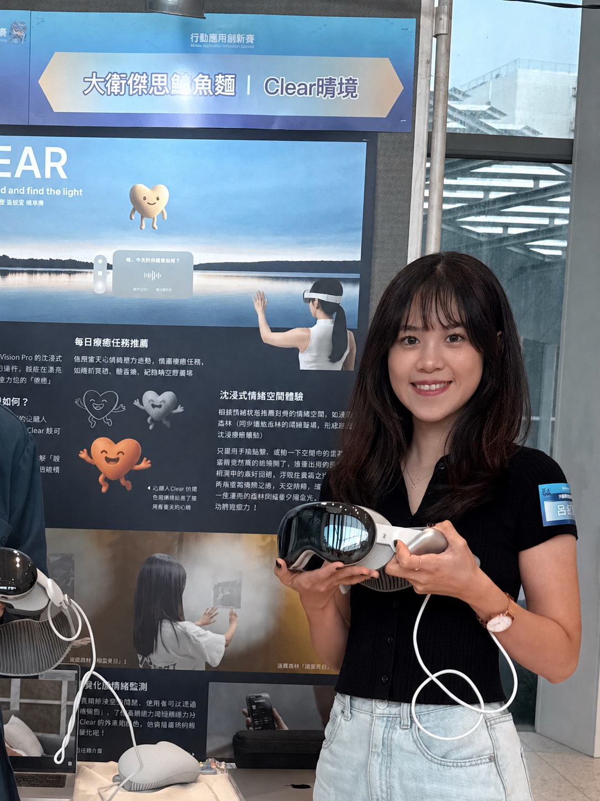

Bio
Hi, I'm Jess. I'm a Product Manager/Designer focused on building AI and immersive technology products.
Previously a Product Manager at an AI EdTech startup, where I led the launch of AI-powered learning features that grew to 3,000+ registered child users and 50% weekly active user growth.
My work explores new product opportunities in AI, social technology, and spatial computing, including Chewverse (AI dining companion) and Clear (Apple Vision Pro immersive wellbeing concept, invited to present at Today at Apple).
I’m particularly interested in building AI-native products that translate emerging technologies into intuitive user experiences and scalable products.
Skills
Product
Product Strategy · PRD · Roadmapping · Feature Prioritization
Execution
Cross-functional Collaboration · Agile Development · Rapid Prototyping
Data
Product Metrics · User Research · SQL / BigQuery
Technology
AI Interaction Design · XR / Spatial Computing
Tools
Figma · SQL · Illustrator · Blender
